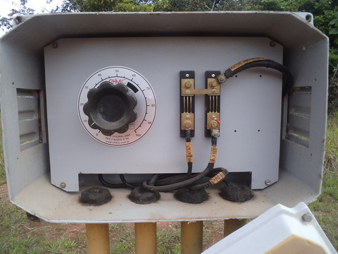
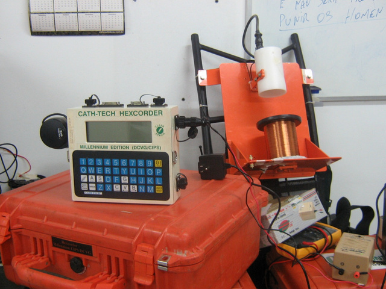
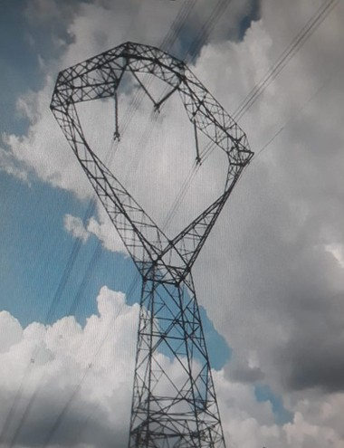
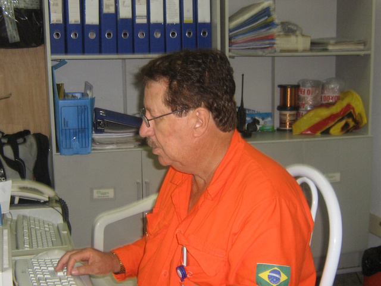
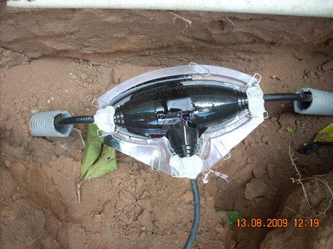

Proteção catódica e integridade para dutos e instalações industriais
Projeto, inspeção CIPS/DCVG e PCM/A-Frame, construção e manutenção de SPC, aterramento e SPDA — com equipe que já atuou em projetos para Petrobras, Transpetro e distribuidoras de gás.
EXPERIÊNCIA DOS SÓCIOS EM PROJETOS PARA:
- PETROBRAS
- TRANSPETRO
- PETROBRAS URUCU
- PETROBRAS UO-ES
- PETROBRAS UO-AM
- BR DISTRIBUIDORA
- ENEVA
- COPERGÁS
- MSGÁS
- PGNGÁS
- GEOGÁS
- REFINARIA DE MANGUINHOS
- EXTERRAN
- GEOMETRAL ENGENHARIA
- IRMÃOS DUTOS
Da concepção à manutenção, uma única equipe responsável



Projetos de Sistema de Proteção Catódica, aterramento e proteção contra descargas atmosféricas que garantem a integridade da instalação e a segurança de pessoas e equipamentos.
Medimos ao longo do duto para encontrar onde o revestimento falha
Com CIPS/DCVG e PCM/A-Frame, o potencial ON/OFF é registrado passo a passo. As quedas abaixo do critério apontam falhas de revestimento — e é ali que a intervenção acontece, sem escavações às cegas.
Agendar uma inspeçãoDo escopo ao relatório final, em quatro etapas
- 01 Envio do escopo Traçado, extensão, localização e relatórios anteriores, se houver.
- 02 Análise técnica Avaliação do escopo e visita ao local, quando necessária.
- 03 Proposta técnica e comercial Escopo detalhado, cronograma e valores em até [PRAZO].
- 04 Execução e relatório final Serviço em campo e entrega de relatório técnico com recomendações.


Experiência de campo e equipamentos próprios de inspeção
Os sócios da DW Projetos acumulam atuação em refinarias, gasodutos e unidades de produção. Além de proteger o patrimônio e reduzir custos com reparos, a proteção catódica é uma ferramenta importante de preservação do meio ambiente.
Trabalho real, em instalações reais
Antes de solicitar a proposta
Quais regiões vocês atendem?
[RESPOSTA — regiões e estados de atuação]
Vocês emitem ART?
[RESPOSTA — emissão de ART pelo responsável técnico]
Que formato tem o relatório de inspeção?
[RESPOSTA — ex.: perfil ON/OFF, lista de defeitos georreferenciados, recomendações]
Fazem proposta para processos licitatórios?
[RESPOSTA — participação em licitações e cadastros de fornecedor]
Precisa proteger um duto ou uma instalação?
Envie o escopo e a localização do ativo. Retornamos com análise técnica e proposta em até [PRAZO] dias úteis.